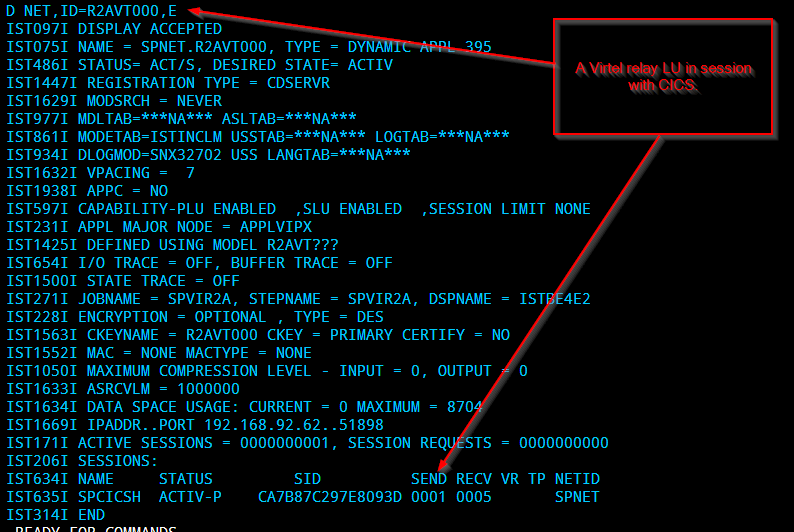
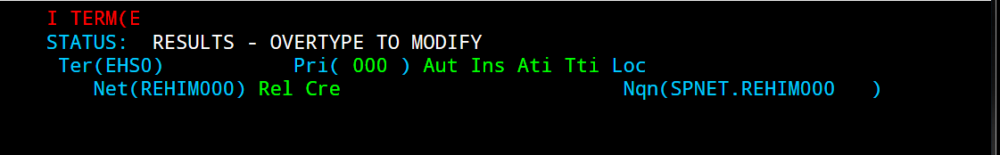

Virtel Security. Using server and client certificates¶
In this newsletter we look at setting up Virtel to work with client and user certificates and to effectively remove the need for a user to provide a user id and password. This is equivalent to the Express Logon Feature (ELF) provided by Host on Demand and other telnet clients.
First, let’s review what is going on behind the scenes with certificate authentication and X.509 certificate validation within TLS/SSL. The guiding principle here is that Public Key Infrastructure (PKI) requires that data encrypted with a public key can only be decrypted with a private key and data encrypted with a private key can only be decrypted with a public key. The secure session (https) that runs between the browser and Virtel uses the Application Transparent Transport Layer Security feature of z/OS Communications Server, also known as AT-TLS. AT-TLS allows socket applications to access encrypted sessions by invoking Secure Socket Layer (SSL) within the transport layer of the TCP/IP stack. A policy agent (PAGENT) is used to configure AT-TLS using parameter statements which will determine which sessions are to use AT-TLS.
AT_TLS inserts itself in the connection between the application and browser. This means that the application will send and receive clear text over the socket interface, but data over the network is encrypted by system SSL. System SSL has three supported protocol levels:
TLSv1
SSLv2
SSLv3
In this configuration we will be using SSLv3.
The server / client process, which in Virtel’s case is the Virtel started task (server) and the browser (client), implements the following SSL protocol or handshake during the “hello” phase of establishing a secure session:
- The Client contacts the Server ;
- The Server sends a certificate;
- Server authentication is performed by the Client ;
- Client sends the certificate;
- Client authentication is performed by the Server ;
- An encryption algorithm and single key is chosen to encrypt / decrypt data
The purpose of the authentication is to ensure that the server/client are in fact who they say they are. This is to ensure that they server/client private and public keys haven’t been stolen and are purporting to be an entity that they aren’t and thereby compromising security. Authentication uses X.509 digital certificates. Further details of this handshake and the certificate exchange can be found in Appendix B. TLS/SSL Security z/OS Communications Server: IP Configuration Guide.
**Certificates **
What’s in a X.509 certificate?
Amongst other things it includes the Distinguished Name of the Server (DNS), the public key of the Server, Distinguished Name of the Server organization issuing the certificate and the issuer’s signature. If we look at a certificate held with RACF we can see this information. Certificates are identified by a combination of LABEL, USERID or Certification Authority (CA).
READY
**RACDCERT ID(SPVIRSTC) LIST(LABEL(‘VIRTEL SSL DEMO’)) **
Digital certificate information for user SPVIRSTC:
Label: VIRTEL SSL DEMO
Certificate ID: 2Qji1+XJ2eLjw+XJ2ePF00Di4tNAxMXU1kBA
Status: TRUST
Start Date: 2014/07/08 00:00:00
End Date: 2015/07/08 23:59:59
Serial Number:
>05<
Issuer’s Name:
>CN=z/OS Security Server.O=SYSPERTEC.C=FR<
Subject’s Name:
>CN=RECETTE VIRTEL.T=VIRTEL Web Access.O=SYSPERTEC.C=FR<
Key Usage: HANDSHAKE, DATAENCRYPT
Key Type: RSA
Key Size: 1024
Private Key: YES
Ring Associations:
Ring Owner: SPVIRSTC
Ring:
>VIRTRING<
Similar details can be found in the browser settings. For example here is what Chrome displays in the HTTPS/SSL certificate database.

Types of certificates.
Client certificate
Server certificate
Well-known Certificate Authority (CA) Signing certificate
RACF signing certificate
In this configuration we will be using self-signed server and client certificates. In most installation you would use server and client certificates signed by a well-known CA. These well-known CA certificates are normally available in the RACF and browser key data bases.
Configuring the certificates
The first step is to create the necessary certificates. We require a server certificate, a RACF signing certificate and a user certificate.
In the Virtel SAMPLIB there is a member called SSLSETUP. This will initialize the SSL environment and create the RACF signing certificate. Some of the steps may or may not be relevant so you will need to customize SSLSETUP accordingly. For example, you might already be running the PAGENT started task and have RACF definitions in place to support the required SSL access.
The following is the certificate generation statement for the RACF signing certificate.
//DCERTCA EXEC PGM=IKJEFT01
//SYSTSPRT DD SYSOUT=*
//SYSTSIN DD *
/*—————————————————————–*/
/* Delete previous signing certificate */
/*—————————————————————–*/
RACDCERT CERTAUTH +
DELETE(LABEL(‘z/OS signing certificate’))
//*——————————————————————-*
//* CCERTCA : CREATE SIGNING CERTIFICATE *
//*——————————————————————-*
//CCERTCA EXEC PGM=IKJEFT1A
//SYSTSPRT DD SYSOUT=*
//SYSTSIN DD *
/*—————————————————————–*/
/* Create a signing certificate */
/*—————————————————————–*/
RACDCERT CERTAUTH +
GENCERT +
WITHLABEL(‘z/OS signing certificate’) +
SUBJECTSDN( +
CN(‘z/OS Security Server’) +
O(‘SYSPERTEC’) +
C(‘FR’)) +
KEYUSAGE(CERTSIGN) SIZE(1024) +
NOTAFTER(DATE(2026-06-30))
If we list the certificate after we have created it will get the following:-
READY
**RACDCERT CERTAUTH LIST(LABEL(‘z/OS signing certificate’)) **
Digital certificate information for CERTAUTH:
Label: z/OS signing certificate
Certificate ID: 2QiJmZmDhZmjgalh1uJAoomHlYmVh0CDhZmjiYaJg4GjhUBA
Status: TRUST
Start Date: 2013/07/03 00:00:00
End Date: 2026/06/30 23:59:59
Serial Number:
>00<
Issuer’s Name:
>CN=z/OS Security Server.O=SYSPERTEC.C=FR<
Subject’s Name:
>CN=z/OS Security Server.O=SYSPERTEC.C=FR<
Key Usage: CERTSIGN
Key Type: RSA
Key Size: 1024
Private Key: YES
Ring Associations:
Ring Owner: SPVIRSTC
Ring:
>VIRTRING<
The key usage identifies this certificate as a signing certificate. This certificate will be used to sign other certificates that we generate.
Next is the server certificate. Again we use RACF to generate the certificate and use the RACF signing certificate to “sign” it. The following extract is from the Virtel SAMPLIB member SSLUCERT.
//CCERTIF EXEC PGM=IKJEFT1A
//SYSTSPRT DD SYSOUT=*
//SYSTSIN DD *
/*—————————————————————–*/
/* Create a digital certificate */
/*—————————————————————–*/
RACDCERT ID(SPVIRSTC) /* VIRTEL userid */ +
GENCERT +
WITHLABEL(‘VIRTEL SSL DEMO’) +
**SIGNWITH(CERTAUTH LABEL(‘z/OS signing certificate’)) + **
SUBJECTSDN( +
CN(‘RECETTE VIRTEL’) +
T(‘VIRTEL Web Access’) +
O(‘SYSPERTEC’) +
C(‘FR’)) +
KEYUSAGE(HANDSHAKE DATAENCRYPT) SIZE(1024)
Note how we identify the signing certificate with the SIGNWITH parameter using the same label information that we used when defining the RACF signing certificate.
Key rings
Having generated two of our certificates we now need a place to keep them. We place the certificates on a key ring and associate the key ring with the VIRTEL server RACF user id (in our case SPVIRSTC). The member SSLSETUP has some RACF commands to perform the key ring generation. Here is an extract:
/*—————————————————————–*/
/* Create a keyring */
/*—————————————————————–*/
RACDCERT ID(SPVIRSTC) /* VIRTEL userid */ +
ADDRING(VIRTRING)
/*—————————————————————–*/
/* Add the certificate to the keyring */
/*—————————————————————–*/
RACDCERT ID(SPVIRSTC) /* VIRTEL userid */ +
CONNECT( +
ID(SPVIRSTC) +
**LABEL(‘VIRTEL SSL DEMO’) + **
RING(VIRTRING) +
DEFAULT)
Again it is the label that identifies the key(certificate) that we want to add to the key ring owned by user SPVIRSTC.
User Certificate
The next step is to create a user certificate which we will export and import into our browser’s key data base. In the Virtel SAMPLIB member SSLUCERT performs the task of creating the user certificate and creating an “exportable” file.
//DCERTIF EXEC PGM=IKJEFT01
//SYSTSPRT DD SYSOUT=*
//SYSTSIN DD *
/*—————————————————————–*/
/* Delete previous digital certificate */
/*—————————————————————–*/
RACDCERT ID(SPTHOLT) /* client userid */ +
DELETE(LABEL(‘SSL client certificate’))
//*——————————————————————-*
//* UCERTIF : CREATE DIGITAL CERTIFICATE FOR USER *
//*——————————————————————-*
//UCERTIF EXEC PGM=IKJEFT1A
//SYSTSPRT DD SYSOUT=*
//SYSTSIN DD *
/*—————————————————————–*/
/* Create a digital certificate */
/*—————————————————————–*/
RACDCERT ID(SPTHOLT) /* client userid */ +
GENCERT +
WITHLABEL(‘SSL client certificate’) +
**SIGNWITH(CERTAUTH LABEL(‘z/OS signing certificate’)) + **
SUBJECTSDN( +
CN(‘Ed Holt’) /* client name */ +
O(‘Syspertec Communication’) /* company name */ +
C(‘France’)) /* country */ +
KEYUSAGE(HANDSHAKE) SIZE(1024)
/*—————————————————————–*/
/* Export the digital certificate and private key */
/*—————————————————————–*/
RACDCERT ID(SPTHOLT) /* client userid */ +
EXPORT(LABEL(‘SSL client certificate’)) +
FORMAT(PKCS12DER) +
DSN(SPTHOLT.P12) +
PASSWORD(‘azj77sdmlizczxerghgbiadbbdbxnbsnbxiazb’)
Again we sign the certificate with our RACF signing certificate. The user certificate is also exported to a flat file – SPTHOLT.P12 in our example (you can use your own naming conventions). This file must be downloaded to the client workstation in binary mode and imported into the browser’s key data base.
Note that the exported certificate is associated with a password. This password will be required when importing the certificate on the client workstation.
The final thing to do is to add the user certificate and the signing certificate to the key ring associated with the Virtel server task user id.
//*——————————————————————-*
//* Associate certificate with user id *
//*——————————————————————-*
//UCERTIF EXEC PGM=IKJEFT1A
//SYSTSPRT DD SYSOUT=*
//SYSTSIN DD *
/*—————————————————————–*/
/* Add certificate to Server ring */
/*—————————————————————–*/
RACDCERT ID(SPVIRSTC) /* client userid */ +
CONNECT (CERTAUTH +
**LABEL(‘z/OS signing certificate’) + **
RING(VIRTRING) +
USAGE(CERTAUTH))
/*—————————————————————–*/
/* Add certificate to Server ring */
/*—————————————————————–*/
RACDCERT ID(SPVIRSTC) /* client userid */ +
CONNECT (ID(SPTHOLT) +
**LABEL(‘SSL client certificate’) + **
RING(VIRTRING) +
USAGE(CERTAUTH))
/*—————————————————————–*/
/* Refresh the RACF profiles */
/*—————————————————————–*/
SETROPTS RACLIST(DIGTRING) REFRESH
SETROPTS RACLIST(DIGTCERT) REFRESH
The “CONNECT CERTAUTH” tells RACF that this is a signing CA certificate and the “CONNECT ID(SPTHOLT) indicates that the certificate labelled ‘SSL client certificate’ is associated with USERID SPTHOLT. This is how Virtel obtains the USERID. Also, note that we refresh the RACF profiles related to certificates and key rings.
If we list our key ring for user SPVIRSTC we should have three certificates.
READY
**RACDCERT ID(SPVIRSTC) LISTRING(VIRTRING) **
Digital ring information for user SPVIRSTC:
Ring:
>VIRTRING<
Certificate Label Name Cert Owner USAGE DEFAULT
——————————– ———— ——– ——-
VIRTEL SSL DEMO ID(SPVIRSTC) PERSONAL YES
z/OS signing certificate CERTAUTH CERTAUTH NO
SSL client certificate ID(SPTHOLT) CERTAUTH NO
Importing the certificate on the client work station.
To import the user certificate into the client workstation the P12 file must be downloaded in binary and then the certificate import wizard is run to import the certificate.

After importing the following panel is displayed:-

At this stage we have completed our certificate generation. Through the use of the certificates we will be able to initiate a secure session (https) with an application and obtain a user id.
** PassTicket support**
The next step is to obtain a pass ticket in place of a password so that Virtel can log on to the target application and present a user id and password combination on behalf of the user. The following job will enable PassTicket support for our target application SPCICSH and using user id SPVIRSTC, out Virtel server user id. This job will have to be customized accordingly:
//STEP1 EXEC PGM=IKJEFT1A,DYNAMNBR=20
//* RDEFINE FACILITY IRR.RTICKETSERV
//SYSTSPRT DD SYSOUT=*
//SYSTSIN DD *
SETROPTS CLASSACT(APPL)
SETROPTS CLASSACT(PTKTDATA)
SETROPTS RACLIST(PTKTDATA)
SETROPTS GENERIC(PTKTDATA)
RDEFINE FACILITY IRR.RTICKETSERV
RDELETE PTKTDATA SPCICSH
RDELETE PTKTDATA IRRPTAUTH.SPCICSH.*
RDEFINE PTKTDATA IRRPTAUTH.SPCICSH.* UACC(NONE)
RDEFINE PTKTDATA SPCICSH SSIGNON(KEYMASKED(998A654FEBCDA123)) +
UACC(NONE)
//STEP1 EXEC PGM=IKJEFT1A,DYNAMNBR=20
//SYSTSPRT DD SYSOUT=*
//SYSTSIN DD *
PERMIT IRR.RTICKETSERV CL(FACILITY) ID(SPVIRSTC) ACC(READ)
PERMIT IRRPTAUTH.SPCICSH.* CL(PTKTDATA) ID(SPVIRSTC) ACC(UPDATE)
SETROPTS REFRESH RACLIST(PTKTDATA)
SETROPTS REFRESH RACLIST(FACILITY)
In order for Virtel to generate PassTickets, you must also modify your VIRTCT to include the parameter PASSTCK=YES and then reassemble the VIRTCT. See chapter 6 of the Virtel Installation Guide for more details on the Virtel VIRTCT.
** PAGENT Configuration**
To enable system SSL sessions to take place between the browser and the application we have to tell AT-TLS and SSL which sockets to intercept. This is configured in the pagent configuration file which can be found in /etc/pagent.conf. The two areas that we are interested in are the TTLSEnvironmentAction section and the TTLSRule section.
TTLSEnvironmentAction VIRTELenvir_inSec
{
HandshakeRole ServerWithClientAuth
Trace 7
TTLSKeyringParms
{
Keyring VIRTRING
}
TTLSEnvironmentAdvancedParms
{
SSLv2 On
SSLv3 On
TLSv1 On
ClientAuthType SAFCheck
}
TTLSCipherParmsRef VIRTELcipher
}
…………
…………
…………
TTLSRule VIRTELrule_in_eh
{
Jobname SPVIREH
LocalPortRange 41002
Direction Inbound
TTLSGroupActionRef VIRTELgroup
TTLSEnvironmentActionRef VIRTELenvir_inSec
}
The TTLS Rule identifies Virtel Started task name via the Jobname parameter and also the port number that can support secured sessions _ https. In this case it is port 41002.
The rules section also identifies the environmental section. In this case we have selected an environment section called VIRTELenvir_insec.
In VIRTELenvir_insec we identify that we want to use both server and client certificates –
*HandShakeRole ServerWithClientAuth *
That the user certificate must be associated with a valid RACF userid –
ClientAuthType SAFCheck
The name of the keyring that holds the keys(certificates)
Keyring VIRTRING
A default pagent.conf is shipped with the SAMPLIB member SSLSETUP which you can use to modify accordingly to define the above SSL sections.
To refresh a pagent.conf profile after you have made changes you can issue the following z/OS command:-
F PAGENT,REFRESH
** Virtel Configuration**
The final part in our configuration is to configure Virtel to use SSL to obtain the user id and PassTicket support to create a password. We configure Virtel in the transaction associated with our target application, in this case the CICS application called SPCICSH.

Note that PassTicket is set to 2. This will enable Virtel to generate a temporary password. Security is set to 3. This indicates that Virtel will receive a USERID based upon the user certificate used in the authentication process. The TIOA at logon is a string that will logon to the CICS application using the user id and password values that Virtel has obtained.
With this configuration we can logon to our CICS application without the user presenting any user id or password. This is very much like the Express Logon Facility implemented in our Telnet clients.
** Logon Example **
In the following screen shots we demonstrate logging into a CICS application via a secure session (https) without specifying any user id/password. Our initial URL is
https://192.168.170.30:41002/w2h/WEB2AJAX.htm+CICS; you will replace the IP address with your own installation IP address or domain name.
We are presented with a « Select a certificate » window from the browser requesting the certificate we wish to user for authenication purposes. We select the certificate we downloaded.
The next panel is a warning panel which identifes that the certificate we are using has not been authenticated by a well-known CA authority. We are of course aware of this as we are using a RACF self signed certifcate.

We select Advanced and are then presented with information about the certifciate.
We select the “Proceed” link.

We are signed into CICS without having to specify any user id or password.
Problems
It is easy to miss something when configuring user certificate sign on. Here are some general guidelines that should help in debugging configuration errors.
- Is AT-TLS active.
Issue the following z/OS command – D TCPIP,,N,TTLS
The response should be :-
EZD0101I NETSTAT CS V1R13 TCPIP 706
TTLSGRPACTION GROUP ID CONNS
VIRTELGROUP 00000002 3
1 OF 1 RECORDS DISPLAYED
END OF THE REPORT
- PAGENT return codes
Common session startup/handshake errors are reported through messqge EZD1287I. In the example below we can see that the handshake has failed with a return code of 5003. Return codes under 5000 are generated by System SSL and are defined in the System SSL Programming manual. Return codes over 5000 are generated by AT-TLS and are defined in the IP Diagnosis Guide. In the following the 5013 suggests that the browser has sent clear text; in other words, http was used instead of https in the URL.
BPXF024I (TCPIP) Oct 7 13:33:08 TTLS 83951769 : 15:33:08 TCPIP 367
EZD1281I TTLS Map CONNID: 000006A2 LOCAL: 192.168.170.30..41002
REMOTE: 192.168.92.62..57545 JOBNAME: SPVIREH USERID: SPVIRSTC TYPE:
InBound STATUS: Enabled RULE: VIRTELrule_in_eh ACTIONS: VIRTELgroup
VIRTELenvir_inSec **N/A**
BPXF024I (TCPIP) Oct 7 13:33:08 TTLS 83951769 : 15:33:08 TCPIP 368
EZD1286I TTLS Error GRPID: 00000002 ENVID: 00000000 CONNID: 000006A2
LOCAL: 192.168.170.30..41002 REMOTE: 192.168.92.62..57545 JOBNAME:
SPVIREH USERID: SPVIRSTC RULE: VIRTELrule_in_eh RC: 5003 Data
Decryption
**EZD1287I TTLS Error RC: 5003 Data Decryption 369 **
LOCAL: 192.168.170.30..41002
REMOTE: 192.168.92.62..57545
JOBNAME: SPVIREH RULE: VIRTELrule_in_eh
USERID: SPVIRSTC GRPID: 00000002 ENVID: 00000000 CONNID: 000006A2
Common PAGENT return codes:-
7 No certificate
8 Certificate not trusted
109 No CA certificates on ring
202 Keyring does not exists
401 Certificate expired
402/12 Client and server cannot agree cipher suite
416 Virtel does not have permission to list keyring
431 Certificate is revoked
434 Certificate key not compatible with cipher suite
435 Certificate authority unknown
5003 Browser sent clear text.
- Virtel messages
VIRHT57E LINE IS NOT SET UP FOR HTTPS
This means that the browser has sent encypted text (https) but that AT-TLS has not decrypted it before sending it to VIRTEL. The PAGENT rules haven’t correctly identified this port as a SSL jobname/port. Check the /etc/pagent.conf member. The message is a bit misleading as there is no line setup required by Virtel.
Normally AT-TLS is transparent to VIRTEL. AT-TLS performs the decryption and transforms the https request into an http request before passing it to VIRTEL. The only case where VIRTEL is AT-TLS aware is when the VIRTEL transaction definition specifies SECURITY=3 (TLS) and in this case VIRTEL will check that the session has been processed by AT-TLS and will issue an IOCTL to obtain the userid associated with the certificate.
In the normal case, you should specify HandshakeRole Server, ClientAuthType Full, and ApplicationControlled Off in the AT-TLS rules, as in the example in VIRT447.SAMPLIB(SSLSETUP). VIRTEL does not issue an IOCTL to turn decryption on and off, so if you specified ApplicationControlled On then you would get VIRHT57E because AT-TLS has not been instructed to start decryption.
If you still get an error when you have ApplicationControlled Off then we will need to see the SYSLOG (for the EZD TTLS messages), the JESMSGLG from the VIRTEL started task, and the SYSPRINT resulting from a z/OS command F VIRTEL,SNAP immediately after the error occurs. We would also like to see the exact URL which was entered at the browser, as well as the AT-TLS pagent.conf file.
** z/OS IBM References**
- SA22-7683 Security Server: RACF Security Administrator’s Guide
Chapter 21. RACF and Digital Certificates
- SC24-5901 Cryptographic Services: System SSL Programming
Chapter 12. Messages and Codes
- SC31-8775 Communications Server: IP Configuration Guide
Chapter 14. Policy-based networking
Chapter 18. Application Transparent Transport Layer Security (AT-TLS) data protection
- SC31-8776 Communications Server: IP Configuration Reference
Chapter 21. Policy Agent and policy applications
- GC31-8782 Communications Server: IP Diagnosis Guide
Chapter 28. Diagnosing Application Transparent Transport Layer Security (AT-TLS)
- SC31-8784 Communications Server: IP Messages: Volume 2
Chapter 10. EZD1xxxx messages
Virtel References
- VIRTEL Installation Guide
PASSTCK parameter Page 66
- VIRTEL Connectivity Reference
Transactions – PassTicket Parameter Page 93
Transactions – Security Parameter Page 94
- VIRTEL Web Access Guide
Security – Data encryption by SSL Page 244